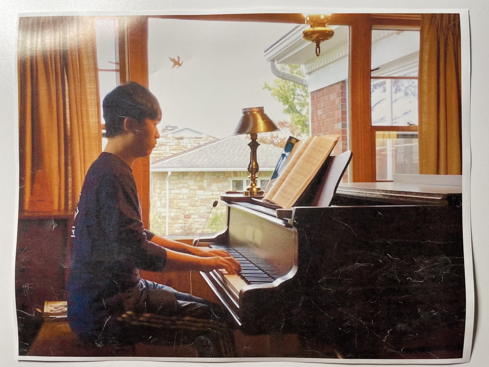

Project information
- Category: Service Learning
- Advisor: Geisinger Hospice
- Date: May 2022 to Present
Hospice Volunteer
While being busy with studying and doing research, I have also been a hospice volunteer for almost a year. I get to use my musical and communication skills to work with patients and their families. Through this volunteering experience, I trained myself to be a good listener and a caretaker, and most importantly, gave families help when they needed the most.